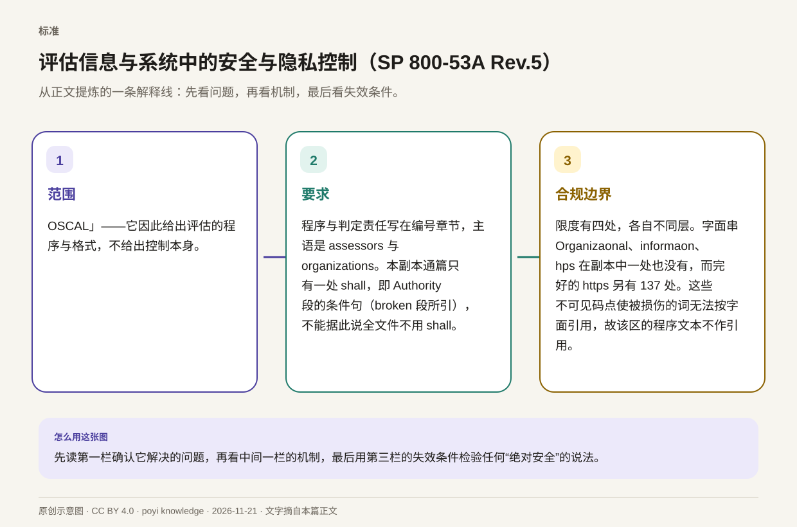
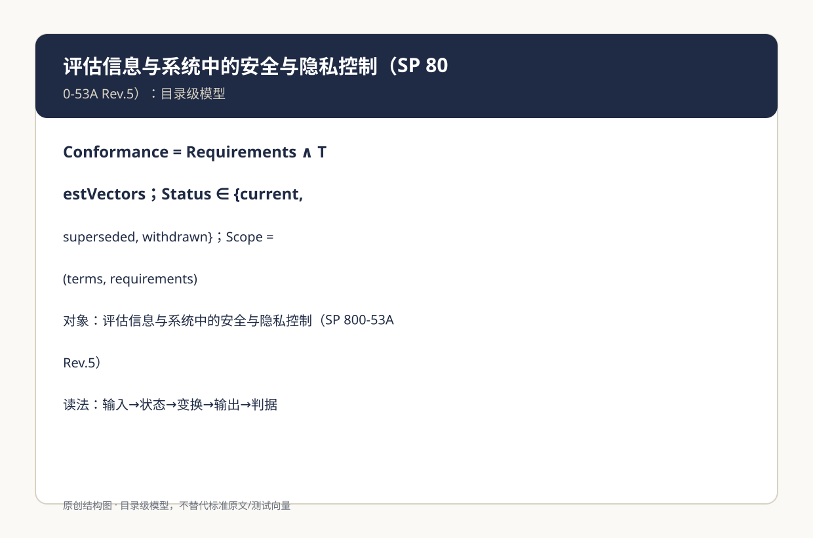

原理与机制
标准：评估信息与系统中的安全与隐私控制（SP 800-53A Rev.5）（Assessing Security and Privacy Controls in Information Systems and Organizations (SP 800-53A Rev.摘要首句给出方法与程序两样产出及其框架：「This publication provides a methodology and set of procedures for conducting assessments of security and privacy controls employed within systems and organizations within an effective risk management framework.」次句钉住对齐对象：「The assessment procedures, executed at various phases of the system development life cycle, are consistent with the security and privacy controls in NIST Special Publication 800-53, Revision 5.」第三句把程序定性为可裁剪的起点：「The procedures are customizable and can be easily tailored to provide organizations with the needed flexibility to conduct security and privacy control assessments that support organizational risk management processes and are aligned with the stated risk tolerance of the organization.」§1.1 把动作再压缩一次：「The purpose of this publication is to provide guidelines for building effective security and privacy assessment plans, as well as a comprehensive set of procedures for assessing the effectiveness of security and privacy controls employed in systems and organizations.」并指明所依据的控制目录：「The guidelines apply to the security and privacy controls defined in [SP 800-53] (as amended), Security and Privacy Controls for Information Systems and Organizations.」关键词行把产出物列全，含「Open Security Controls Assessment Language; OSCAL」——它因此给出评估的程序与格式，不给出控制本身。

为什么重要
第一章开篇给出因果位置：「Once employed within a system, security and privacy controls are assessed to determine their overall effectiveness (i.e., the extent to which the controls are implemented correctly, operating as intended, and producing the desired outcome with respect to meeting the security and privacy requirements for the system and the organization).」执行摘要先排除一种误用：「Security and privacy control assessments are not about checklists, simple pass/fail results, or generating paperwork to pass inspections or audits.」其下一句给出它真正承担的功能：「Rather, control assessments are the principal vehicle used to verify that selected security and privacy controls are implemented and meeting stated goals and objectives.」同一节说明设计目标在灵活与一致之间：「A major design objective for SP 800-53A is to provide an assessment framework and initial starting point for assessment procedures that are flexible enough to meet the needs of different organizations while providing consistency in conducting control assessments.」并在 RMF 中定位：「SP 800-53A addresses the Assess and Monitor steps of the RMF and provides guidance on the security and privacy control assessment processes.」§2.3 则给出证据单位：「An assurance case is a body of evidence organized into an argument demonstrating that some claim about a system holds (i.e., is assured).」要补的缺口因此是选择之后的证明环节：控制被选中不等于被正确实现并起作用。
应用与实例
程序与判定责任写在编号章节，主语是 assessors 与 organizations。印出的 2.4 节界定方法与对象（本份文本把它报在 §2.3 名下）：「Assessment methods define the nature of the assessor actions and include examine, interview, and test.」与「Assessment objects identify the specific items being assessed as part of a given control and include specifications, mechanisms, activities, and individuals.」力度选择归组织，同属印出的 2.4 而非 2.3：「The organization determines the assessment methods needed to provide the level of assurance required by the organization.」§1.1 把程序定性为起点而非清单：「The guidance in this publication has been developed with the intention of enabling organizations to tailor the basic assessment procedures provided.」并接一句「The assessment procedures are used as a starting point for and as input to the assessment plan.」§3.2.2 把选取动作落到评估者：「For each control in the security plan and privacy plan to be included in the assessment, assessors select the corresponding assessment procedure from Chapter 4.」同节说明覆盖范围：「SP 800-53A provides assessment procedures for each security and privacy control and control enhancement in [SP 800-53].」§3.2.3 给出裁剪层级：「Organizations have the flexibility to perform the tailoring process at the organization level for all systems or common controls, at the individual system level, or using a combination of organization-level and system-specific approaches.」该条目所引的这几节不见 shall，其措辞是现在时与 may 一类；本副本通篇只有一处 shall，即 Authority 段的条件句（broken 段所引），不能据此说全文件不用 shall。义务形式在引文范围内主要是职责归属：评估者选程序、组织定力度与频率。

边界与攻击面
限度有四处，各自不同层。§1.1 划适用面：「The security and privacy guidelines in this publication are applicable to federal systems other than those systems designated as national security systems, as defined in 44 U.S.C., Section 3542.」Authority 段的措辞是条件式的：「Such information security standards and guidelines shall not apply to national security systems without the express approval of the appropriate federal officials exercising policy authority over such systems.」§1.1 的脚注把更细的执行层交出去：「Such test scripts are at a lower level of detail than provided by the assessment procedures contained in this guidance and are, therefore, beyond the scope of this publication.」第四章目录前的 CAUTIONARY NOTE 排除清单化误读：「the potential assessment methods are not intended to be mandatory or exclusive.」并同样处理对象列表：「In addition, the set of potential assessment objects listed in the catalog are not intended to be mandatory but rather a set from which the necessary and sufficient set of objects for a given assessment can be selected to make the appropriate determinations.」本份留存文本另有一处限制属于抽取而非文件：自第四章过程目录起，该章的表与页脚把连字换成私人区码点，ti 作 U+E000、tt 作 U+E003，故词形印作 Organiza 接 U+E000 接 onal、informa 接 U+E000 接 on 一类（按此形态分别有 1215 与 2843 处），页脚里的下载行则印作 h 接 U+E003 接 ps；字面串 Organizaonal、informaon、hps 在副本中一处也没有，而完好的 https 另有 137 处。这些不可见码点使被损伤的词无法按字面引用，故该区的程序文本不作引用。
历史与背景
扉页三行按连排印为一个块「NIST Special Publication 800-53A Revision 5 Assessing Security and Privacy Controls in Information Systems and Organizations JOINT TASK FORCE」，署名不是个人而是跨部门工作组；日期由引用行给出页数与日期「Natl.Inst.Stand.Technol.Spec.Publ.800-53A, Rev.5, 733 pages (January 2022) CODEN: NSPUE2」，免费获取行是「This publication is available free of charge from:」，其后是 DOI 10.6028/NIST.SP.800-53Ar5。工作组身份由致谢页首句给出：「This publication was developed by the Joint Task Force Interagency Working Group.」该页另把前任贡献者按名册列出，并记本系列的起点：「The authors wanted to acknowledge the many individuals who contributed to previous versions of Special Publication 800-53A since its inception in 2005.」被点名的官员含国防部条目的「HON.John Sherman Chief Information Officer」等。版次事实来自前置的格式说明块：「The new format for assessment procedures introduced in Special Publication (SP) 800-53A Revision 4, is further improved in this revision (SP 800-53A Revision 5).」这份副本不含出版史块、取代声明或撤回横幅，第 800-53 号的编号一致性在同块中以注释交代。
逐步示例与核验
形式模型与复算步骤
[S=\min_i S_i,\quad S_i\in{\text{密钥强度},\text{分组安全},\text{实现安全}}]
评估信息与系统中的安全与隐私控制（SP 800-53A Rev.5）的公开参数、密钥/随机数与消息；变量说明：S 为综合安全强度；各分量取最小值，不能只看密钥位数。1.读取标准规定的密钥/分组/模式参数。2.按标准表换算等效强度。3.取最弱分量作为系统强度。边界：公式只覆盖已登记的参数与假设；参数取值、标准版本和实现细节仍以来源为准。
参考出处
- Wikipedia search entry for 评估信息与系统中的安全与隐私控制（SP 800-53A Rev.5）. https://zh.wikipedia.org/w/index.php?search=%E8%AF%84%E4%BC%B0%E4%BF%A1%E6%81%AF%E4%B8%8E%E7%B3%BB%E7%BB%9F%E4%B8%AD%E7%9A%84%E5%AE%89%E5%85%A8%E4%B8%8E%E9%9A%90%E7%A7%81%E6%8E%A7%E5%88%B6%EF%BC%88SP%20800-53A%20Rev.5%EF%BC%89
- Handbook of Applied Cryptography (Menezes, van Oorschot, Vanstone). https://www.cacr.math.uwaterloo.ca/hac/